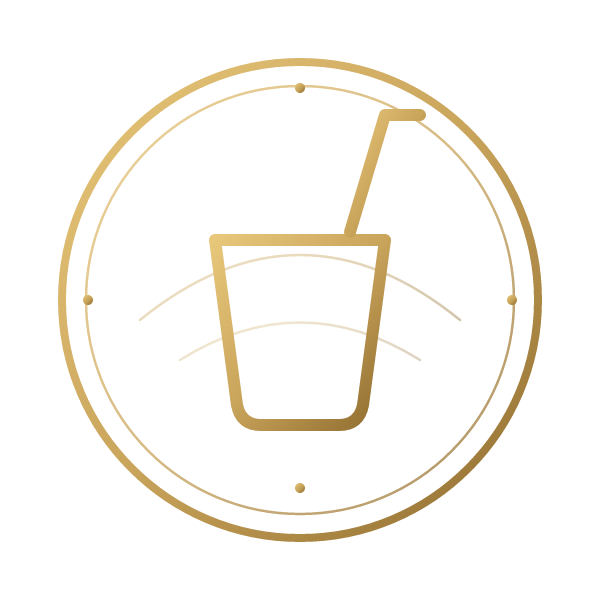
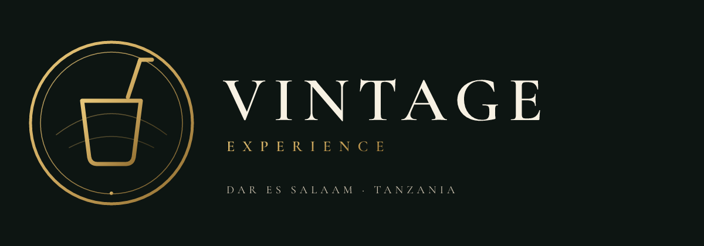
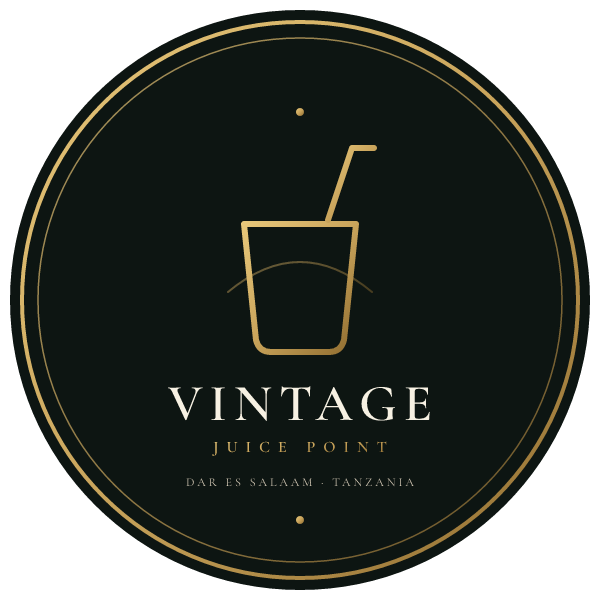
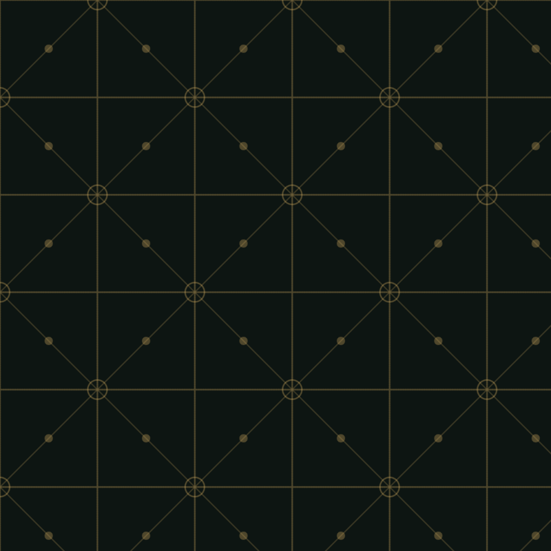
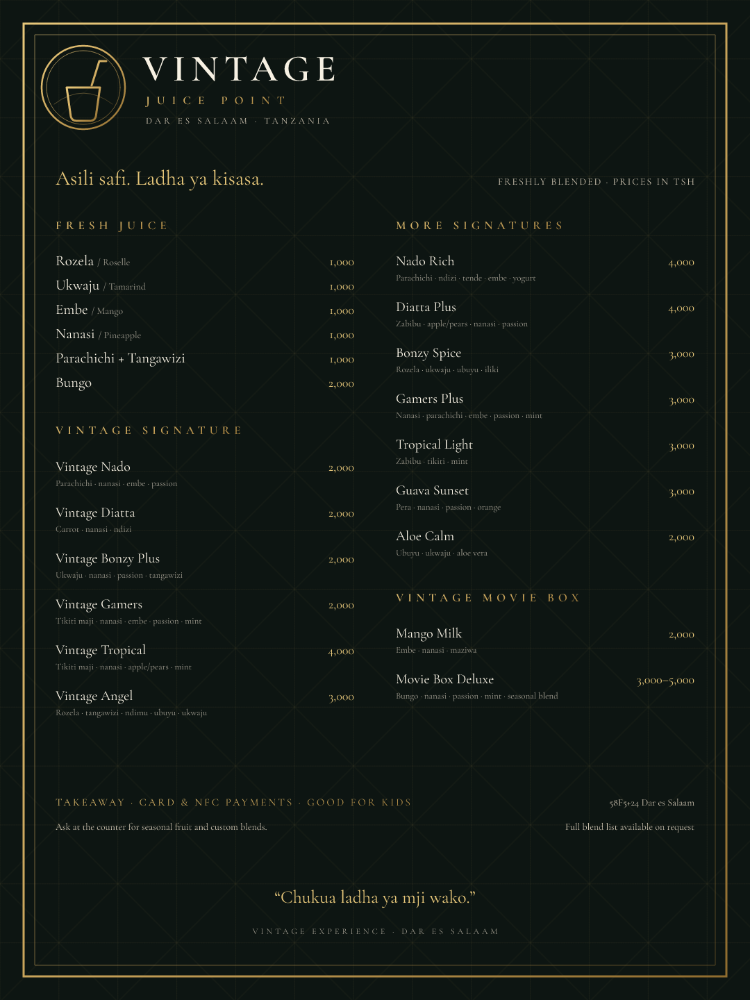
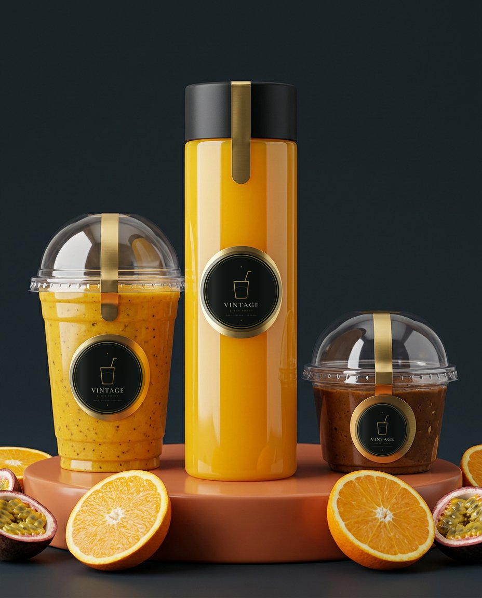
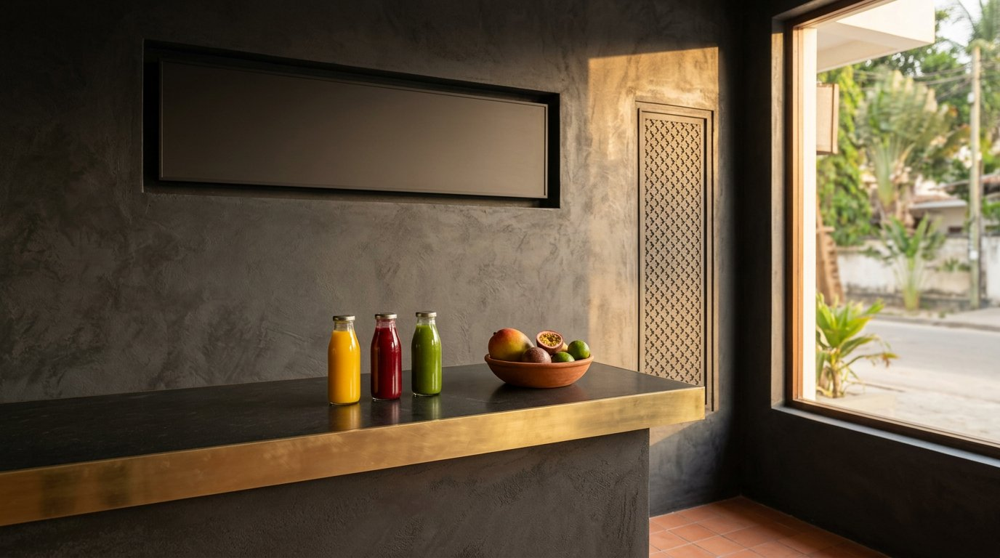
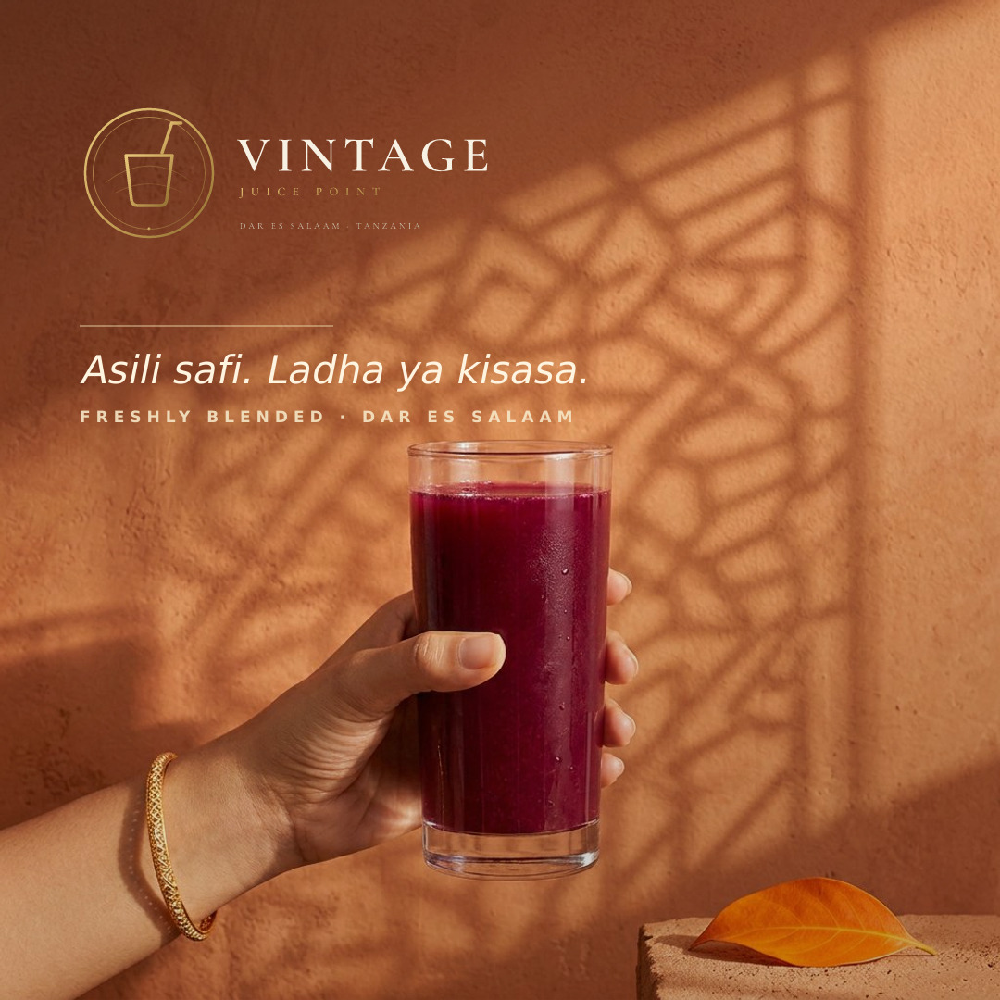
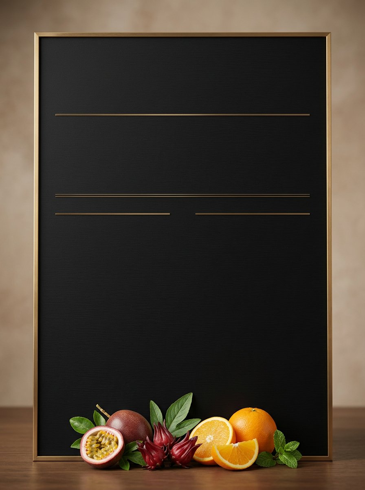
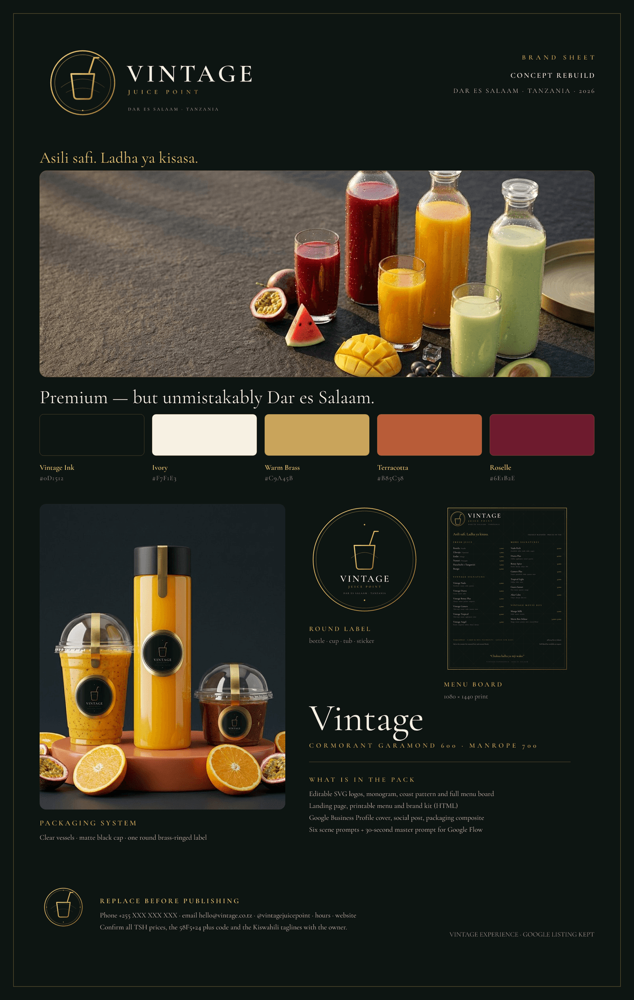

VINTAGE,
quietly reimagined.
A complete identity system for the Dar es Salaam juice point in your reference photos: new vector logo, menu, packaging, photography direction, landing page, Google Maps cleanup and Google Flow video prompts.
What changed, and why.
The old materials had recognition but no system. The rebuild keeps the equity and removes the noise.
| Element | Reference / old | Rebuilt / new |
|---|---|---|
| Naming | “Vintage Juice Point Natural”, “Vintage Experience”, “Summer Wavy” all competing. | VINTAGE · JUICE POINT master brand; Vintage Experience kept for the existing Maps listing and campaign line. |
| Logo | Gold cup, mixed serif/sans, “Natural”, cursive script around it. | One circular cup monogram, elegant serif wordmark, precise brass rules, no script. |
| Menu | Glossy blue board, dense all-caps ingredients, = 1000 repeated, clipart fruit. | Matte ink board, clear hierarchy, TSH note once, real fruit still life, curated board + full printable menu. |
| Colours | Black, gold, bright blue, orange, red, green, many fruit images. | Ink, ivory, warm brass, terracotta; juice colours used only as product accents. |
| Packaging | Mixed bottle shapes, yellow/pink caps, different stickers, popcorn-style tub. | Clear bottle + clear cup + clear tub, matte black caps, one round brass label. |
| Digital | Missing phone, hours, website, menu link and social in the supplied listing. | Editable placeholders, cleanup checklist, new cover / logo / menu / product photos. |
One mark, used properly.
All logo files are real vectors, not AI-generated lettering. Use the cream/brass version on dark and the ink/brass version on light.
Primary lockup
logo-primary-dark.svg / .pngFor ink, charcoal and dark photography.
Light lockup
logo-primary-light.svg / .pngFor ivory, paper and print.
Cup monogram
logo-mark.svg / .png
Stickers, favicon, cap, social avatar.
Experience lockup
logo-experience-dark.svg / .png
For the existing Maps listing / campaign line.
Round label
label-round.svg / .png
Bottle, cup and tub label system.
Coast pattern
pattern.svg / brand-pattern.png
Subtle texture only — never behind body copy.
Restrained, warm, local.
Asili safi. Ladha ya kisasa.
Freshly blended in Dar es Salaam.
Never use cursive script, outline type, simulated foil bevels or more than two typefaces in one layout.
Readable at a counter.
The printed board stays curated. The full blend list lives in menu.html and menu-data.json.

Editable source: menu-board.svg · PNG: menu-board.png


- Hierarchy: category → blend name → ingredients → price.
- Prices: formatted once as TSH instead of repeating
= 1000. - Language: Kiswahili first with light English glosses for visitors.
- Spelling cleanup: standardised
ubuyu,aloe vera,apple/pears— verify with the owner. - Layout: two calm columns, generous space, thin brass rules, no clipart.
peas/apple, ubuvu/ubuyu and alozera/aloe vera were ambiguous.
The product is the colour.
Clear vessels, one label, real fruit, golden-hour coastal light. All generated images are text-free so real vector type can be overlaid cleanly.





Fix the listing before the logo.
The supplied Maps screenshots show a 5.0 rating from 2 reviews, but no phone, hours, website or menu link. Keep the existing listing name to protect those reviews.
- Keep Vintage Experience as the Google name until the owner confirms the trading name.
- Add real phone / WhatsApp, hours, website, menu URL and social handle.
- Primary category: Juice shop; only add secondary categories that are true.
- Upload
gbp-cover-branded.jpgas cover,logo-primary-on-ink.pngas logo. - Replace old menu photos with
menu-board.png. - Add
storefront.jpg,packaging-labelled.jpg,social-post-branded.jpg. - Keep takeaway, card / NFC payments and “good for kids” only if still accurate.
- Do not create a duplicate listing or invent contact details.
Description draft
Vintage Experience is a fresh juice point in Dar es Salaam serving locally inspired blends made with roselle, tamarind, mango, pineapple, passion fruit, avocado, watermelon, grapes and baobab. Signature mixes, movie-box cups and takeaway bottles in a calm, premium setting. Card, debit and NFC mobile payments accepted.
REPLACE markers before publishing.
Copy-paste video prompts.
Generate 8-second clips, then add the real logo and tagline in post. Video models should never be asked to render readable text.
Style anchor
Brand: VINTAGE JUICE POINT, a premium fresh-juice bar in Dar es Salaam, Tanzania. Visual world: deep charcoal plaster, warm brushed brass, terracotta walls, cream linen, subtle Swahili-coast geometric shadows, golden-hour coastal light. Fresh local fruit: roselle, tamarind, mango, pineapple, passion fruit, avocado, watermelon, grapes, orange, baobab. Product: clear glass bottles and cups with deep roselle red, mango-passion gold and avocado-pineapple pale green juice, fine condensation, matte black caps, no plastic straws. Mood: calm, affluent, tactile, local, human, never loud. Camera: slow controlled movement, shallow depth of field, soft natural light, subtle film grain, elegant negative space. No readable text, no logos, no old script lettering, no watermarks, no distorted fruit, no extra fingers, no generic stock-smile people, no neon, no clutter.
Negative prompt
old Vintage Juice Point logo, cursive script, Summer Wavy text, glossy blue menu board, fruit clipart, large illustrated fruit, readable typography, generated logo, garbled letters, fake phone number, fake email, watermark, plastic straws, mismatched bottles, bright neon, harsh flash, fast cuts, oversaturated colours, messy counter, low-resolution phone snapshot, duplicated hands, extra limbs, distorted cups, spilled liquid, insects, unrelated brands.
30-second master film
Create a 30-second premium brand film for VINTAGE JUICE POINT, a fresh-juice bar in Dar es Salaam, Tanzania. Deep charcoal plaster, warm brushed brass, terracotta walls, Swahili-coast geometric shadows, golden-hour coastal light. Use the uploaded reference images for juice colour, bottle silhouette, fruit and black/gold/terracotta mood, but do not copy the old logo, script fonts or busy menu. 0–4s: extreme macro of deep red roselle juice pouring slowly into a clear glass bottle; condensation beads form; warm light rims the glass; camera drifts 2 cm to the right. 4–9s: elegant still-life cut of halved passion fruit, mango cubes, watermelon triangle, grapes, roselle and avocado on dark stone; a hand places one orange leaf; slow push-in. 9–14s: top-down signature blend being built in layers — mango gold, pineapple, passion fruit, avocado green — in a clear cup; ingredients settle in slow motion; soft brass tray edge visible. 14–19s: a hand with a delicate gold bangle lifts a tall clear cup of roselle juice against a terracotta wall; a geometric kanga-like shadow moves gently across the wall; hold on negative space at the top. 19–24s: wide interior shot of a calm juice counter at golden hour: dark plaster, brass counter edge, carved Zanzibar-door-inspired panel, three unbranded juice bottles and a small bowl of fruit; slow dolly forward; no people, no signage text. 24–30s: return to the hero still life of three juices — roselle red, mango gold, avocado green — on dark stone with fruit arranged sparingly; camera slowly rises; end on a clean, static frame with generous empty space on the left for a logo overlay. Cinematic, tactile, quiet luxury, 24fps feel, shallow depth of field, subtle film grain, no rapid cuts. Do not render any readable text, logo, phone number, email or watermark. End frame must be suitable for adding the VINTAGE JUICE POINT logo and the line “Asili safi. Ladha ya kisasa.” in post.
Scene 1 — The Pour · 8s · 9:16
Extreme macro, vertical frame. Deep crimson roselle juice pours in a slow ribbon into a chilled clear glass bottle on dark charcoal stone. Tiny condensation beads, warm Dar es Salaam late-afternoon light catching the rim, a faint brass tray edge out of focus behind. Camera drifts almost imperceptibly to the right. One continuous take, no cuts, no hands in frame, no text, no logo. Tactile, quiet, premium.
Scene 2 — From the Coast · 8s · 16:9
Slow push-in on a refined still life: halved passion fruit, diced mango, watermelon triangle, dark grapes, roselle calyx, orange slice and avocado half arranged sparingly on dark stone. A single hand enters from the right and places a fresh orange leaf, then exits. Golden-hour light, soft shadow, subtle brass line in background. No clutter, no text, no logo, no illustrated fruit.
Scene 3 — Signature Build · 8s · 9:16
Top-down vertical shot of a clear smoothie cup on a dark surface. In layers, mango-passion gold, pineapple, passionfruit seeds, avocado-pineapple pale green and ice settle into the cup in gentle slow motion. A thin brass line and a small roselle flower sit beside the cup. Clean negative space at the top. Camera slowly rotates 5 degrees. No spoon, no text, no logo, no plastic straw.
Scene 4 — The Handoff · 8s · 9:16
A hand with a delicate gold bangle holds a tall clear cup of deep roselle juice against a textured terracotta wall. Sunlight casts a soft geometric Swahili-coast shadow across the wall; the shadow moves slightly as if a breeze moved leaves outside. The cup has condensation and no label. Hold generous negative space above the cup for a future logo overlay. Warm, human, premium, no readable text, no watermark.
Scene 5 — Night Counter · 8s · 16:9
Wide cinematic interior of a small premium juice counter in Dar es Salaam at golden hour: dark charcoal plaster wall, brushed brass counter edge, subtle carved geometric panel inspired by Zanzibar doors, terracotta floor tile, three unbranded juice bottles in roselle red, mango gold and avocado green, one small wooden bowl of fruit. Blank dark signage rectangle above the counter with no lettering. Slow dolly forward, warm window light, no people, no text, no logo.
Scene 6 — End Frame · 8s · 9:16
Static vertical hero frame: three clear bottles and glasses of roselle red, mango gold and avocado green juice on dark charcoal stone, fresh passion fruit, mango, grapes and avocado arranged sparingly, warm brass tray edge at the right, generous clean negative space on the left and top. Light slowly warms by 10 percent over 8 seconds. Almost no camera movement. No text, no logo, no watermark. Designed for a post-production logo and tagline overlay.
Post-production overlay
Add in your editor, not in Flow:
VINTAGE JUICE POINT DAR ES SALAAM · TANZANIA Asili safi. Ladha ya kisasa.
Upload into Flow
Use the files in flow-inputs/:
- 3 original reference photos
- hero, packaging, storefront and social style frames
- menu board, label and pattern style frames
Ready to post.
These are real composites: the vector artwork rasterised in Cormorant Garamond and Manrope, then placed on the photography. No placeholder stickers.
Instagram post · 1080×1080 · social-post-branded.jpg

Story / Status · 1080×1920 · social-story-branded.jpg
Product · 928×1152 · packaging-labelled.jpg
Google cover · 1600×900 · gbp-cover-branded.jpg

Brand sheet · A4 ratio · brand-sheet.png master, brand-sheet.jpg for WhatsApp
Menu board · 1080×1440 · menu-board.png
Replace these, then ship.
- +255 XXX XXX XXX — real phone / WhatsApp
- hello@vintage.co.tz — real email + domain
- @vintagejuicepoint — real Instagram handle
- Add opening hours before publishing
- Add verified website / menu URL
- Confirm 58F5+24 Dar es Salaam plus code and exact street address.
- Confirm all menu prices and ambiguous ingredient spellings.
- Confirm Kiswahili taglines with a native-speaking owner.
Everything in one folder.
Live pages
index.html · menu.html · brand-kit.htmlResponsive site, printable full menu and this kit.
Written docs
BRAND_GUIDELINES.md · GOOGLE_BUSINESS_PROFILE.mdStrategy, usage rules and Maps cleanup.
Video prompts
GOOGLE_FLOW_PROMPTS.md · flow-master-prompt.txtMaster film, six scenes, style anchor, negative prompt.
Vector identity
assets/*.svgLogos, monogram, label, pattern, editable menu board.
Print & web PNG
assets/*.png · assets/*.jpgMenu board, logos, label, pattern and photography.
Ready-to-post images
social-post · social-story · gbp-cover · packaging-labelled · brand-sheetComposited identity on photography, sized for Instagram, WhatsApp and Google.
Flow inputs
flow-inputs/ · vintage-brand-assets.zipReference frames and a single download bundle.